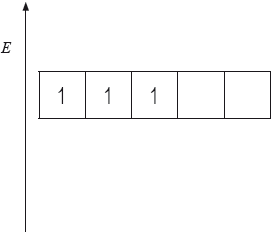

HL Paper 3
When excess ammonia solution is added to a solution of copper(II) sulfate the oxidation number of the copper ion does not change but there is a noticeable colour change. Outline the reasons for this change in colour.
Transition metal complexes are coloured because electronic transitions occur within split d orbital energy levels. Identify two different factors that affect the colour of complexes of a specific transition metal.
Phenolphthalein indicator is colourless in solutions with a pH less than 8.2 but pink in solutions with a pH greater than 10.0. The molecule dissociates according to the equation:

Explain, in terms of the structures, why the indicator is colourless at \({\text{pH}} < 8.2\) and is pink at \({\text{pH}} > 10.0\).
Phenolphthalein is colourless at pH 7 but its structure changes at pH 11 and it becomes pink. The structures of the compound at these two pH values are shown below.

Copper(II) sulfate forms a pale blue aqueous solution. When aqueous ammonia is added to this, initially a pale blue precipitate forms; this precipitate then dissolves in excess ammonia to form a deep blue solution. Explain why these solutions are coloured and the colour with excess ammonia is a deeper blue.
The complex ion \({{\text{[Ni(}}{{\text{H}}_{\text{2}}}{\text{O}}{{\text{)}}_{\text{6}}}{\text{]}}^{2 + }}\) is green and \({{\text{[Ni(N}}{{\text{H}}_{\text{3}}}{{\text{)}}_{\text{6}}}{\text{]}}^{2 + }}\) is blue. Explain why the \({{\text{[Ni(}}{{\text{H}}_{\text{2}}}{\text{O}}{{\text{)}}_{\text{6}}}{\text{]}}^{2 + }}\) complex ion is coloured and outline why changing the identity of the ligand changes the colour of the ion.
Waste water from an abandoned copper mine is suspected of polluting a community’s drinking water supply, causing concern that the concentration of dissolved copper compounds might exceed the legal limit of 1.3 ppm.
The concentration of transition metal ions can also be determined by measuring the colour intensity of solutions of their complex ions. In the case of copper(II) ions, excess aqueous ammonia is sometimes added before measuring the absorption.
(i) Describe why adding excess ammonia to aqueous copper(II) ions causes the shade of the blue colour to change.
(ii) State one other factor, apart from a change of ligand, which could affect the colour of a transition metal complex.
The concentration of transition metal complexes in water can be determined by visible and ultraviolet (UV-Vis) spectroscopy.
Two octahedral chromium complexes are \({{\text{[Cr(}}{{\text{H}}_{\text{2}}}{\text{O}}{{\text{)}}_{\text{6}}}{\text{]}}^{2 + }}\) and \[{{\text{(Cr(N}}{{\text{H}}_{\text{3}}}{{\text{)}}_{\text{6}}}{\text{]}}^{3 + }}\). Describe how the increase in oxidation state from Cr(II) to Cr(III) and the change in ligand from water to ammonia will affect the splitting of the d orbitals and the frequency of the light these complexes absorb.
One of the following organic compounds is colourless while the other is orange.

Predict, with reference to conjugation of double bonds, which compound (anthracene or tetracene) will absorb visible light and, therefore, be coloured.
According to recommendations from the World Health Organization (WHO), the maximum allowed concentration of lead(II) cations, \({\text{P}}{{\text{b}}^{2 + }}{\text{(aq)}}\), in drinking water is \({\text{0.001 mg}}\,{\text{d}}{{\text{m}}^{ - 3}}\). The tap water taken from a building was analysed using atomic absorption (AA) spectroscopy to determine the concentration of \({\text{P}}{{\text{b}}^{2 + }}{\text{(aq)}}\). An AA spectrophotometer was calibrated and the following results were obtained.

Although both lead, Pb, and chromium, Cr, are metals, only chromium is classified as a transition metal and forms transition metal complexes, such as \({{\text{[Cr(}}{{\text{H}}_{\text{2}}}{\text{O}}{{\text{)}}_{\text{6}}}{\text{]}}^{3 + }}\).
(i) The energy level diagram showing the electrons in the five 3d orbitals of a chromium atom is represented below. Draw the completed diagram showing the d orbitals in \({{\text{[Cr(}}{{\text{H}}_{\text{2}}}{\text{O}}{{\text{)}}_{\text{6}}}{\text{]}}^{3 + }}\) after splitting.

(ii) State and explain what happens to the splitting of the d orbitals if the ligand is changed from \({{\text{H}}_{\text{2}}}{\text{O}}\) to \({\text{N}}{{\text{H}}_{\text{3}}}\).